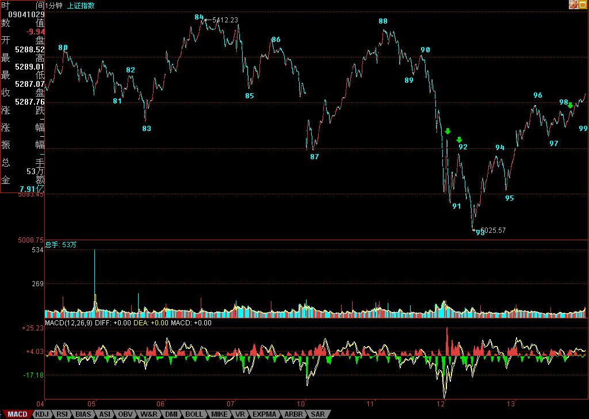

有些钱不是适合每个人赚的
2007/9/13 16:00:16
看完下面文章，请务必看
各位注意，严重更正
首先表扬一下某网友，请看：
[匿名] 新浪网友 删除此人所有评论
2007-09-13 11:25:01
呵呵，被我说中了，目前就看破不破5166。不破5166就是1F三买，那就还有机会冲击5265
这就如同下棋，只看一步，肯定高手不了，能知道上午的跳水，其实是去形成92-95的第三类买点，这就不错，为什么？因为一般都关注5265点了，5265点按理论，如期成为大盘的阻力，由此产生的回落，当然可以短差一把，但由于在96时，95-96与93-94的力度对比并没有明显的类背驰，而且一旦回落形成下面1分钟的第三类买点，反而成为反弹继续的动力，能看出这一点，就比光看5265点要更进一步了。
后来，96到99形成一个新的1分钟中枢，那么这个对76-85这5分钟中枢，86-93的1分钟走势类型离开，93开始的1分钟走势类型的反抽就一目了然了，这意味着，后来，突破该中枢继续上行，突破5265点，第三类卖点不成立，76-85开始的中枢震荡依旧。
显然，目前这个93开始的1分钟走势并没有结束，96-99是第一个中枢，如果是盘整走势，那么99开始的向上就要和93-96的形成盘整背驰，如果不形成，这走势就强了，理论上大盘完全可以再创新高。但探讨这个问题没意义，关键是看这盘整背驰是否形成。
不过，对于96-99这1分钟中枢，其第三类买点还没有形成，因此，比上面的盘整背驰还要急迫的，就是要确认这第三类买点，否则，最多只能是这1分钟中枢的震荡，然后由此产生96-99的第三类卖点，转而下跌也是符合理论要求的。
所以，明天的技术走势极为简单，最强的，就是开盘后能形成96-99的1分钟中枢的第三类买点，然后继续上攻，这时候必须关注其盘整背驰问题，一旦出现，该怎样操作，就不用说了。
弱的，就是不能形成第三类买点，然后继续中枢震荡，最弱的当然就是形成第三类卖点，然后再次大幅下跌。
因此，明天的走势，只要看好这几点，一切都在当下把握中。
注意，正确的操作，就是93背驰进入后，现在一直持有着，或者你有技术条件，96-97的震荡的可以对冲一把的，回补或换股后，现在应该是持有状态。
最坏的情况，就是今晚突然有巨大消息，这样明天一开，确定96-99的第三类卖点成立，就手起刀落。当然，这种情况，一百天也碰不到一次，所以一般情况，就可以耐心等待真正卖点的出现。卖点出现干什么，就不用说了。
上面说的都是短线，这对技术要求高，没这理解力与技术的，就算了，把仓位调节好，有些钱不是适合每个人赚的。
当然，只要你对本ID的理论有一定认识，那没有什么钱是不可以赚的，因为所有的赢利机会，本质上都被本ID的理论所把握，唯一的问题是你的理论把握程度与交易通道，反应速度等等。理论保证所有机会，那你的精力与资金不可能参与所有的，所以就只能有所选择了。
个股方面，没什么可说的，像小安子，那些对他不满之人，现在也如同等比一样没什么可说的了。000938，今天提供了一个底分型的买入机会，就算你不关系这股票，那也请从纯技术角度，好好研究其图形。
注意，下面都是梦话，谁信谁有毛病：
这里再说一只股票，注意，这股票风险极大，不适合一般人，本ID先把其前因后果说清楚，这股票是600078。该股的问题是在云南买别的矿的时，突然发现买的地方下面有另外的矿，那矿就是600497搞那种，据说量比600497还大。
注意，因为本ID一直有参与矿的事情，这消息的来源与此有关。但这消息的准确性问题不大，但最大的问题是，该公司去买的时候，不是直接用上市公司，其次，这东西，完全存在可能就是被他们低价倒给自己，因此上市公司最终没什么利益。
因此，建议，对云南熟悉的人，自己去调研一下，看这事情的准确性有多大，千万别只听本ID说，本ID目前也在核实中，并不保证任何问题，而且就算是真的，也有可能不装到上市公司里，所以完全有可能是闹剧一场。
消息就这样了，如果大盘下跌，这股票完全有可能跟着大幅度下跌，所以任何头脑发热就冲进去的，自己负责。
马上要去看一个PE，车子在下面等着，先下，再见。
看完上面文章，请务必看
各位注意，严重更正
